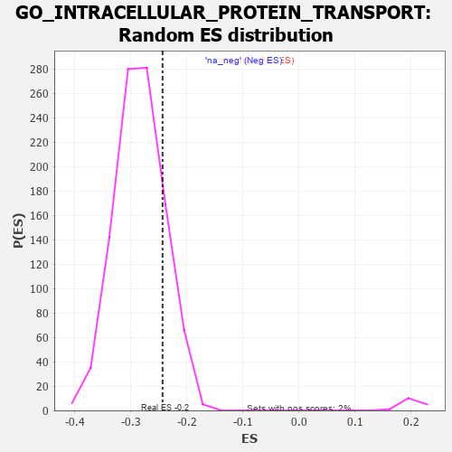

| | | Dataset | 7d |
| Phenotype | NoPhenotypeAvailable |
| Upregulated in class | na_neg |
| GeneSet | GO_INTRACELLULAR_PROTEIN_TRANSPORT |
| Enrichment Score (ES) | -0.24315715 |
| Normalized Enrichment Score (NES) | -0.85627866 |
| Nominal p-value | 0.828252 |
| FDR q-value | 0.9775432 |
| FWER p-Value | 1.0 |
Table: GSEA Results Summary
 Fig 1: Enrichment plot: GO_INTRACELLULAR_PROTEIN_TRANSPORT
Fig 1: Enrichment plot: GO_INTRACELLULAR_PROTEIN_TRANSPORT
Profile of the Running ES Score & Positions of GeneSet Members on the Rank Ordered List
| PROBE | GENE SYMBOL | GENE_TITLE | RANK IN GENE LIST | RANK METRIC SCORE | RUNNING ES | CORE ENRICHMENT | | 1 | SIX2 | | | 40 | 3.152 | 0.0172 | No |
| 2 | RAC2 | | | 60 | 2.442 | 0.0321 | No |
| 3 | RTP3 | | | 121 | 1.425 | 0.0344 | No |
| 4 | DESI1 | | | 138 | 1.332 | 0.0418 | No |
| 5 | RHOU | | | 210 | 1.031 | 0.0399 | No |
| 6 | SRSF9 | | | 240 | 0.950 | 0.0429 | No |
| 7 | NSF | | | 243 | 0.947 | 0.0494 | No |
| 8 | COX18 | | | 264 | 0.890 | 0.0531 | No |
| 9 | NUP85 | | | 329 | 0.772 | 0.0502 | No |
| 10 | GSK3A | | | 351 | 0.745 | 0.0528 | No |
| 11 | BAX | | | 387 | 0.711 | 0.0532 | No |
| 12 | CPSF2 | | | 440 | 0.666 | 0.0512 | No |
| 13 | XPOT | | | 441 | 0.665 | 0.0559 | No |
| 14 | SUFU | | | 443 | 0.665 | 0.0605 | No |
| 15 | NXT2 | | | 502 | 0.628 | 0.0574 | No |
| 16 | NUP54 | | | 505 | 0.627 | 0.0616 | No |
| 17 | THOC1 | | | 507 | 0.627 | 0.0660 | No |
| 18 | NMD3 | | | 513 | 0.625 | 0.0698 | No |
| 19 | HTRA2 | | | 527 | 0.621 | 0.0725 | No |
| 20 | TNPO3 | | | 651 | 0.576 | 0.0605 | No |
| 21 | XPO7 | | | 652 | 0.576 | 0.0646 | No |
| 22 | FAF2 | | | 680 | 0.566 | 0.0651 | No |
| 23 | RAE1 | | | 827 | 0.524 | 0.0497 | No |
| 24 | NOL6 | | | 870 | 0.514 | 0.0479 | No |
| 25 | NSUN2 | | | 901 | 0.506 | 0.0476 | No |
| 26 | WLS | | | 907 | 0.505 | 0.0505 | No |
| 27 | STX17 | | | 940 | 0.497 | 0.0499 | No |
| 28 | ZPR1 | | | 967 | 0.491 | 0.0500 | No |
| 29 | NOP9 | | | 993 | 0.485 | 0.0501 | No |
| 30 | CPSF1 | | | 1005 | 0.482 | 0.0521 | No |
| 31 | AKT1 | | | 1040 | 0.476 | 0.0511 | No |
| 32 | AP3S1 | | | 1063 | 0.471 | 0.0516 | No |
| 33 | AIFM1 | | | 1072 | 0.469 | 0.0538 | No |
| 34 | NUP93 | | | 1127 | 0.459 | 0.0500 | No |
| 35 | NUP43 | | | 1160 | 0.453 | 0.0491 | No |
| 36 | UBL5 | | | 1162 | 0.452 | 0.0522 | No |
| 37 | TFDP1 | | | 1180 | 0.450 | 0.0532 | No |
| 38 | CPSF3 | | | 1237 | 0.440 | 0.0490 | No |
| 39 | SRP68 | | | 1247 | 0.439 | 0.0509 | No |
| 40 | PEX3 | | | 1287 | 0.432 | 0.0489 | No |
| 41 | PARL | | | 1290 | 0.432 | 0.0517 | No |
| 42 | THOC3 | | | 1297 | 0.430 | 0.0540 | No |
| 43 | PEX5 | | | 1313 | 0.427 | 0.0551 | No |
| 44 | THOC6 | | | 1316 | 0.426 | 0.0578 | No |
| 45 | NUP88 | | | 1429 | 0.404 | 0.0461 | No |
| 46 | U2AF2 | | | 1466 | 0.396 | 0.0442 | No |
| 47 | SPCS2 | | | 1493 | 0.391 | 0.0436 | No |
| 48 | XPO4 | | | 1518 | 0.388 | 0.0432 | No |
| 49 | SEC62 | | | 1539 | 0.385 | 0.0433 | No |
| 50 | ERP29 | | | 1589 | 0.376 | 0.0396 | No |
| 51 | LCA5L | | | 1598 | 0.374 | 0.0412 | No |
| 52 | SRP14 | | | 1606 | 0.373 | 0.0429 | No |
| 53 | COPZ1 | | | 1613 | 0.372 | 0.0448 | No |
| 54 | DERL2 | | | 1632 | 0.368 | 0.0451 | No |
| 55 | ACOX3 | | | 1670 | 0.361 | 0.0428 | No |
| 56 | TNPO1 | | | 1684 | 0.359 | 0.0436 | No |
| 57 | COPB2 | | | 1687 | 0.359 | 0.0459 | No |
| 58 | XPO5 | | | 1700 | 0.357 | 0.0469 | No |
| 59 | TRAK1 | | | 1714 | 0.354 | 0.0477 | No |
| 60 | NUP58 | | | 1787 | 0.340 | 0.0407 | No |
| 61 | ICMT | | | 1790 | 0.339 | 0.0429 | No |
| 62 | THOC2 | | | 1796 | 0.338 | 0.0446 | No |
| 63 | COPA | | | 1806 | 0.336 | 0.0459 | No |
| 64 | AP2S1 | | | 1846 | 0.329 | 0.0431 | No |
| 65 | AP1M1 | | | 1853 | 0.327 | 0.0446 | No |
| 66 | NUP62 | | | 1871 | 0.324 | 0.0447 | No |
| 67 | BRSK2 | | | 1979 | 0.308 | 0.0329 | No |
| 68 | DNLZ | | | 2012 | 0.303 | 0.0309 | No |
| 69 | DMAP1 | | | 2025 | 0.301 | 0.0315 | No |
| 70 | VPS25 | | | 2033 | 0.300 | 0.0327 | No |
| 71 | GOSR2 | | | 2050 | 0.298 | 0.0327 | No |
| 72 | PEX2 | | | 2056 | 0.298 | 0.0342 | No |
| 73 | SRP72 | | | 2090 | 0.292 | 0.0319 | No |
| 74 | STX16 | | | 2116 | 0.289 | 0.0307 | No |
| 75 | CPSF4 | | | 2118 | 0.288 | 0.0327 | No |
| 76 | SNF8 | | | 2119 | 0.288 | 0.0347 | No |
| 77 | RAB6B | | | 2133 | 0.286 | 0.0350 | No |
| 78 | SYK | | | 2186 | 0.278 | 0.0302 | No |
| 79 | THOC7 | | | 2198 | 0.277 | 0.0308 | No |
| 80 | C2CD5 | | | 2204 | 0.276 | 0.0321 | No |
| 81 | HM13 | | | 2205 | 0.276 | 0.0340 | No |
| 82 | ARL5B | | | 2233 | 0.271 | 0.0324 | No |
| 83 | SRSF1 | | | 2252 | 0.267 | 0.0320 | No |
| 84 | AIP | | | 2281 | 0.263 | 0.0302 | No |
| 85 | ECH1 | | | 2290 | 0.261 | 0.0310 | No |
| 86 | SRSF4 | | | 2311 | 0.258 | 0.0302 | No |
| 87 | SEC13 | | | 2330 | 0.256 | 0.0297 | No |
| 88 | BCAS3 | | | 2352 | 0.253 | 0.0288 | No |
| 89 | OXA1L | | | 2355 | 0.252 | 0.0303 | No |
| 90 | U2AF1 | | | 2359 | 0.252 | 0.0317 | No |
| 91 | COG7 | | | 2371 | 0.250 | 0.0320 | No |
| 92 | SYMPK | | | 2381 | 0.248 | 0.0326 | No |
| 93 | SLU7 | | | 2382 | 0.248 | 0.0344 | No |
| 94 | NCBP2 | | | 2383 | 0.248 | 0.0362 | No |
| 95 | SAE1 | | | 2390 | 0.247 | 0.0371 | No |
| 96 | TMED7 | | | 2478 | 0.230 | 0.0274 | No |
| 97 | UBAC2 | | | 2488 | 0.229 | 0.0278 | No |
| 98 | SARNP | | | 2496 | 0.227 | 0.0285 | No |
| 99 | HUWE1 | | | 2506 | 0.225 | 0.0290 | No |
| 100 | SRP54 | | | 2544 | 0.220 | 0.0257 | No |
| 101 | NXF1 | | | 2597 | 0.214 | 0.0204 | No |
| 102 | BAG3 | | | 2620 | 0.209 | 0.0190 | No |
| 103 | NUP50 | | | 2625 | 0.209 | 0.0200 | No |
| 104 | GNPAT | | | 2629 | 0.208 | 0.0211 | No |
| 105 | VPS4A | | | 2654 | 0.205 | 0.0194 | No |
| 106 | SRSF3 | | | 2696 | 0.199 | 0.0155 | No |
| 107 | PHB2 | | | 2712 | 0.197 | 0.0149 | No |
| 108 | LMAN1 | | | 2743 | 0.192 | 0.0123 | No |
| 109 | AGK | | | 2752 | 0.191 | 0.0127 | No |
| 110 | RIOK2 | | | 2775 | 0.187 | 0.0111 | No |
| 111 | SCFD1 | | | 2783 | 0.185 | 0.0115 | No |
| 112 | ECI2 | | | 2794 | 0.184 | 0.0115 | No |
| 113 | SRP19 | | | 2817 | 0.181 | 0.0099 | No |
| 114 | COPG2 | | | 2859 | 0.173 | 0.0058 | No |
| 115 | TMED5 | | | 2877 | 0.170 | 0.0048 | No |
| 116 | PDCD5 | | | 2885 | 0.169 | 0.0051 | No |
| 117 | RAB17 | | | 2950 | 0.157 | -0.0022 | No |
| 118 | XPO1 | | | 2960 | 0.156 | -0.0023 | No |
| 119 | PEX1 | | | 2990 | 0.151 | -0.0050 | No |
| 120 | SEC63 | | | 3025 | 0.146 | -0.0084 | No |
| 121 | ABCE1 | | | 3051 | 0.143 | -0.0106 | No |
| 122 | PAN3 | | | 3054 | 0.142 | -0.0099 | No |
| 123 | STX6 | | | 3087 | 0.138 | -0.0131 | No |
| 124 | CHP1 | | | 3089 | 0.138 | -0.0122 | No |
| 125 | TLK1 | | | 3098 | 0.137 | -0.0123 | No |
| 126 | TMED4 | | | 3106 | 0.136 | -0.0123 | No |
| 127 | SMG7 | | | 3141 | 0.131 | -0.0158 | No |
| 128 | EDEM2 | | | 3145 | 0.131 | -0.0152 | No |
| 129 | RBM22 | | | 3182 | 0.125 | -0.0191 | No |
| 130 | AP1G1 | | | 3210 | 0.121 | -0.0217 | No |
| 131 | PEX10 | | | 3227 | 0.117 | -0.0230 | No |
| 132 | SYNRG | | | 3230 | 0.117 | -0.0224 | No |
| 133 | NUP98 | | | 3261 | 0.112 | -0.0255 | No |
| 134 | MIPEP | | | 3266 | 0.111 | -0.0253 | No |
| 135 | SNX17 | | | 3272 | 0.110 | -0.0251 | No |
| 136 | SMG5 | | | 3285 | 0.108 | -0.0259 | No |
| 137 | SMAD3 | | | 3303 | 0.105 | -0.0274 | No |
| 138 | RAB8A | | | 3319 | 0.102 | -0.0287 | No |
| 139 | SIL1 | | | 3339 | 0.098 | -0.0305 | No |
| 140 | RBM8A | | | 3355 | 0.096 | -0.0317 | No |
| 141 | VPS16 | | | 3370 | 0.093 | -0.0329 | No |
| 142 | MED1 | | | 3405 | 0.089 | -0.0367 | No |
| 143 | COG3 | | | 3412 | 0.088 | -0.0369 | No |
| 144 | KIF1A | | | 3415 | 0.088 | -0.0365 | No |
| 145 | AP2A2 | | | 3433 | 0.085 | -0.0381 | No |
| 146 | SYTL1 | | | 3460 | 0.083 | -0.0409 | No |
| 147 | ATG3 | | | 3471 | 0.081 | -0.0417 | No |
| 148 | HGS | | | 3476 | 0.080 | -0.0416 | No |
| 149 | CDK5 | | | 3480 | 0.080 | -0.0414 | No |
| 150 | UFM1 | | | 3506 | 0.077 | -0.0442 | No |
| 151 | YIF1B | | | 3514 | 0.075 | -0.0445 | No |
| 152 | UBR5 | | | 3518 | 0.074 | -0.0444 | No |
| 153 | HDAC3 | | | 3528 | 0.072 | -0.0451 | No |
| 154 | LSG1 | | | 3534 | 0.070 | -0.0452 | No |
| 155 | DERL1 | | | 3570 | 0.065 | -0.0493 | No |
| 156 | PARD3 | | | 3584 | 0.063 | -0.0506 | No |
| 157 | NOLC1 | | | 3623 | 0.056 | -0.0552 | No |
| 158 | RIC1 | | | 3627 | 0.055 | -0.0552 | No |
| 159 | FIS1 | | | 3654 | 0.051 | -0.0582 | No |
| 160 | NF1 | | | 3713 | 0.040 | -0.0655 | No |
| 161 | CASC3 | | | 3727 | 0.037 | -0.0669 | No |
| 162 | SRSF2 | | | 3759 | 0.033 | -0.0708 | No |
| 163 | SRPRA | | | 3788 | 0.029 | -0.0742 | No |
| 164 | SPCS1 | | | 3795 | 0.028 | -0.0748 | No |
| 165 | REEP2 | | | 3800 | 0.027 | -0.0751 | No |
| 166 | SMG1 | | | 3843 | 0.021 | -0.0805 | No |
| 167 | RAB18 | | | 3886 | 0.013 | -0.0859 | No |
| 168 | SGSM1 | | | 3907 | 0.009 | -0.0884 | No |
| 169 | GGA1 | | | 3952 | 0.002 | -0.0942 | No |
| 170 | PPM1A | | | 3953 | 0.002 | -0.0942 | No |
| 171 | EVI5 | | | 3960 | 0.001 | -0.0949 | No |
| 172 | STX18 | | | 3962 | 0.000 | -0.0951 | No |
| 173 | AP3B2 | | | 3974 | -0.002 | -0.0965 | No |
| 174 | VPS35 | | | 3989 | -0.006 | -0.0983 | No |
| 175 | SGTB | | | 4044 | -0.015 | -0.1052 | No |
| 176 | HMGCL | | | 4141 | -0.031 | -0.1176 | No |
| 177 | STX7 | | | 4147 | -0.033 | -0.1180 | No |
| 178 | EXOC4 | | | 4182 | -0.039 | -0.1222 | No |
| 179 | AP2B1 | | | 4185 | -0.039 | -0.1222 | No |
| 180 | STAM2 | | | 4193 | -0.041 | -0.1228 | No |
| 181 | ENY2 | | | 4195 | -0.041 | -0.1226 | No |
| 182 | VPS11 | | | 4202 | -0.041 | -0.1231 | No |
| 183 | VTI1A | | | 4224 | -0.046 | -0.1255 | No |
| 184 | RRS1 | | | 4256 | -0.051 | -0.1292 | No |
| 185 | PCID2 | | | 4258 | -0.051 | -0.1290 | No |
| 186 | WDR11 | | | 4262 | -0.052 | -0.1290 | No |
| 187 | RAN | | | 4299 | -0.059 | -0.1333 | No |
| 188 | HERC2 | | | 4302 | -0.060 | -0.1331 | No |
| 189 | SAR1A | | | 4304 | -0.060 | -0.1328 | No |
| 190 | BAG4 | | | 4314 | -0.061 | -0.1336 | No |
| 191 | AUP1 | | | 4315 | -0.062 | -0.1331 | No |
| 192 | ROMO1 | | | 4320 | -0.063 | -0.1332 | No |
| 193 | AMACR | | | 4338 | -0.066 | -0.1350 | No |
| 194 | GRIP2 | | | 4372 | -0.071 | -0.1388 | No |
| 195 | ARF4 | | | 4383 | -0.073 | -0.1396 | No |
| 196 | STX5 | | | 4400 | -0.077 | -0.1411 | No |
| 197 | AP1S2 | | | 4403 | -0.077 | -0.1408 | No |
| 198 | PRR5L | | | 4418 | -0.080 | -0.1421 | No |
| 199 | EIF2D | | | 4423 | -0.081 | -0.1420 | No |
| 200 | VPS29 | | | 4433 | -0.082 | -0.1426 | No |
| 201 | SETD2 | | | 4443 | -0.084 | -0.1432 | No |
| 202 | CDC37 | | | 4446 | -0.084 | -0.1429 | No |
| 203 | KIF3B | | | 4450 | -0.085 | -0.1427 | No |
| 204 | SYVN1 | | | 4454 | -0.085 | -0.1424 | No |
| 205 | LRRK2 | | | 4467 | -0.087 | -0.1434 | No |
| 206 | NXF2 | | | 4484 | -0.092 | -0.1448 | No |
| 207 | RTN2 | | | 4537 | -0.102 | -0.1509 | No |
| 208 | STX2 | | | 4562 | -0.108 | -0.1533 | No |
| 209 | MPV17 | | | 4575 | -0.112 | -0.1541 | No |
| 210 | VPS28 | | | 4582 | -0.114 | -0.1540 | No |
| 211 | SNX27 | | | 4585 | -0.115 | -0.1535 | No |
| 212 | RAB21 | | | 4620 | -0.122 | -0.1570 | No |
| 213 | ARF6 | | | 4704 | -0.140 | -0.1669 | No |
| 214 | RAB5C | | | 4752 | -0.149 | -0.1720 | No |
| 215 | SRPRB | | | 4769 | -0.151 | -0.1730 | No |
| 216 | RAB14 | | | 4784 | -0.155 | -0.1737 | No |
| 217 | FBXW7 | | | 4816 | -0.161 | -0.1767 | No |
| 218 | VPS36 | | | 4845 | -0.167 | -0.1791 | No |
| 219 | DHRS4 | | | 4851 | -0.168 | -0.1786 | No |
| 220 | USO1 | | | 4855 | -0.168 | -0.1778 | No |
| 221 | RAB24 | | | 4868 | -0.171 | -0.1781 | No |
| 222 | CLU | | | 4889 | -0.174 | -0.1795 | No |
| 223 | IFT43 | | | 4907 | -0.179 | -0.1804 | No |
| 224 | TBCK | | | 4937 | -0.186 | -0.1829 | No |
| 225 | SNX2 | | | 4966 | -0.191 | -0.1852 | No |
| 226 | PURA | | | 5032 | -0.205 | -0.1923 | No |
| 227 | IPO7 | | | 5142 | -0.236 | -0.2049 | No |
| 228 | HDAC6 | | | 5183 | -0.244 | -0.2083 | No |
| 229 | SMO | | | 5195 | -0.247 | -0.2080 | No |
| 230 | IPO5 | | | 5207 | -0.248 | -0.2077 | No |
| 231 | IDE | | | 5252 | -0.258 | -0.2116 | No |
| 232 | CDK1 | | | 5264 | -0.262 | -0.2112 | No |
| 233 | PICK1 | | | 5265 | -0.263 | -0.2093 | No |
| 234 | RIMS2 | | | 5272 | -0.265 | -0.2082 | No |
| 235 | RAB7A | | | 5302 | -0.271 | -0.2101 | No |
| 236 | ACOT8 | | | 5364 | -0.288 | -0.2160 | No |
| 237 | FZD5 | | | 5386 | -0.292 | -0.2167 | No |
| 238 | SSR1 | | | 5391 | -0.294 | -0.2151 | No |
| 239 | AP3S2 | | | 5433 | -0.303 | -0.2183 | No |
| 240 | CBLB | | | 5445 | -0.306 | -0.2176 | No |
| 241 | ACOX2 | | | 5461 | -0.310 | -0.2173 | No |
| 242 | KIF3A | | | 5480 | -0.313 | -0.2175 | No |
| 243 | VPS39 | | | 5533 | -0.329 | -0.2219 | No |
| 244 | SYTL5 | | | 5540 | -0.331 | -0.2203 | No |
| 245 | EDEM1 | | | 5541 | -0.331 | -0.2180 | No |
| 246 | EHD1 | | | 5560 | -0.336 | -0.2179 | No |
| 247 | NUCB1 | | | 5579 | -0.340 | -0.2179 | No |
| 248 | VPS45 | | | 5618 | -0.350 | -0.2204 | No |
| 249 | CASP8 | | | 5678 | -0.369 | -0.2254 | No |
| 250 | MTCL1 | | | 5697 | -0.374 | -0.2251 | No |
| 251 | SRRM1 | | | 5775 | -0.398 | -0.2324 | No |
| 252 | VAMP7 | | | 5777 | -0.399 | -0.2297 | No |
| 253 | GRTP1 | | | 5780 | -0.400 | -0.2271 | No |
| 254 | SNX13 | | | 5801 | -0.406 | -0.2268 | No |
| 255 | IFT46 | | | 5802 | -0.406 | -0.2239 | No |
| 256 | ARL6 | | | 5847 | -0.417 | -0.2267 | No |
| 257 | RAB32 | | | 5909 | -0.438 | -0.2316 | No |
| 258 | AGFG1 | | | 5955 | -0.457 | -0.2342 | No |
| 259 | SGSM3 | | | 5957 | -0.457 | -0.2311 | No |
| 260 | GCC2 | | | 5994 | -0.470 | -0.2324 | No |
| 261 | CALR | | | 6077 | -0.499 | -0.2396 | Yes |
| 262 | ARL4D | | | 6078 | -0.499 | -0.2361 | Yes |
| 263 | UBB | | | 6090 | -0.503 | -0.2339 | Yes |
| 264 | AP3M1 | | | 6100 | -0.506 | -0.2315 | Yes |
| 265 | ATG13 | | | 6110 | -0.508 | -0.2290 | Yes |
| 266 | PEX12 | | | 6115 | -0.510 | -0.2259 | Yes |
| 267 | DLG2 | | | 6126 | -0.513 | -0.2236 | Yes |
| 268 | IFT80 | | | 6135 | -0.515 | -0.2210 | Yes |
| 269 | SYTL3 | | | 6160 | -0.523 | -0.2204 | Yes |
| 270 | RAB28 | | | 6195 | -0.535 | -0.2210 | Yes |
| 271 | LCA5 | | | 6213 | -0.540 | -0.2194 | Yes |
| 272 | CDC42 | | | 6236 | -0.548 | -0.2184 | Yes |
| 273 | PEX13 | | | 6255 | -0.557 | -0.2168 | Yes |
| 274 | AP3D1 | | | 6261 | -0.558 | -0.2134 | Yes |
| 275 | IFT52 | | | 6280 | -0.566 | -0.2118 | Yes |
| 276 | SYTL4 | | | 6304 | -0.578 | -0.2106 | Yes |
| 277 | IFT57 | | | 6307 | -0.579 | -0.2068 | Yes |
| 278 | IFT88 | | | 6335 | -0.590 | -0.2061 | Yes |
| 279 | IFT27 | | | 6348 | -0.596 | -0.2034 | Yes |
| 280 | IFT22 | | | 6400 | -0.617 | -0.2057 | Yes |
| 281 | RAB43 | | | 6419 | -0.628 | -0.2036 | Yes |
| 282 | ARL1 | | | 6438 | -0.636 | -0.2014 | Yes |
| 283 | VAMP2 | | | 6525 | -0.672 | -0.2079 | Yes |
| 284 | PEX19 | | | 6569 | -0.693 | -0.2086 | Yes |
| 285 | RPGR | | | 6579 | -0.699 | -0.2048 | Yes |
| 286 | ARF1 | | | 6583 | -0.701 | -0.2002 | Yes |
| 287 | TPR | | | 6597 | -0.709 | -0.1968 | Yes |
| 288 | LTBP2 | | | 6600 | -0.712 | -0.1920 | Yes |
| 289 | PEX6 | | | 6605 | -0.713 | -0.1874 | Yes |
| 290 | TUB | | | 6611 | -0.718 | -0.1830 | Yes |
| 291 | RABL3 | | | 6627 | -0.727 | -0.1798 | Yes |
| 292 | RAB5A | | | 6655 | -0.741 | -0.1780 | Yes |
| 293 | VPS18 | | | 6659 | -0.743 | -0.1731 | Yes |
| 294 | TMED2 | | | 6665 | -0.746 | -0.1685 | Yes |
| 295 | CLIP1 | | | 6667 | -0.746 | -0.1633 | Yes |
| 296 | PAK1 | | | 6691 | -0.757 | -0.1609 | Yes |
| 297 | GSK3B | | | 6719 | -0.768 | -0.1590 | Yes |
| 298 | NXT1 | | | 6774 | -0.797 | -0.1603 | Yes |
| 299 | WDR19 | | | 6796 | -0.812 | -0.1573 | Yes |
| 300 | GIPC1 | | | 6819 | -0.826 | -0.1543 | Yes |
| 301 | VPS41 | | | 6850 | -0.841 | -0.1522 | Yes |
| 302 | SNX33 | | | 6930 | -0.888 | -0.1562 | Yes |
| 303 | SNX3 | | | 6934 | -0.893 | -0.1503 | Yes |
| 304 | ARL3 | | | 7041 | -0.963 | -0.1573 | Yes |
| 305 | RAB1A | | | 7096 | -0.993 | -0.1573 | Yes |
| 306 | WDR60 | | | 7153 | -1.038 | -0.1572 | Yes |
| 307 | UFD1 | | | 7157 | -1.040 | -0.1502 | Yes |
| 308 | TSPO | | | 7194 | -1.065 | -0.1473 | Yes |
| 309 | MFN2 | | | 7208 | -1.081 | -0.1413 | Yes |
| 310 | IFT74 | | | 7211 | -1.085 | -0.1338 | Yes |
| 311 | WDR34 | | | 7233 | -1.103 | -0.1287 | Yes |
| 312 | IFT81 | | | 7277 | -1.151 | -0.1261 | Yes |
| 313 | CIB1 | | | 7280 | -1.152 | -0.1182 | Yes |
| 314 | KIF17 | | | 7291 | -1.160 | -0.1112 | Yes |
| 315 | MYO7A | | | 7302 | -1.175 | -0.1042 | Yes |
| 316 | WDR35 | | | 7357 | -1.225 | -0.1025 | Yes |
| 317 | UBC | | | 7410 | -1.274 | -0.1003 | Yes |
| 318 | MYRIP | | | 7443 | -1.323 | -0.0950 | Yes |
| 319 | KCNB1 | | | 7444 | -1.327 | -0.0856 | Yes |
| 320 | IWS1 | | | 7613 | -1.587 | -0.0962 | Yes |
| 321 | PKD1 | | | 7628 | -1.611 | -0.0866 | Yes |
| 322 | PDCD6 | | | 7630 | -1.615 | -0.0752 | Yes |
| 323 | ANK3 | | | 7690 | -1.740 | -0.0705 | Yes |
| 324 | MYO6 | | | 7697 | -1.753 | -0.0588 | Yes |
| 325 | RNF31 | | | 7744 | -1.895 | -0.0514 | Yes |
| 326 | TCAF2 | | | 7854 | -2.428 | -0.0483 | Yes |
| 327 | FYN | | | 7881 | -2.622 | -0.0331 | Yes |
| 328 | TCAF1 | | | 7901 | -2.803 | -0.0156 | Yes |
| 329 | WDR33 | | | 7939 | -3.452 | 0.0042 | Yes |
Table: GSEA details [plain text format]

Fig 2: GO_INTRACELLULAR_PROTEIN_TRANSPORT: Random ES distribution
Gene set null distribution of ES for GO_INTRACELLULAR_PROTEIN_TRANSPORT